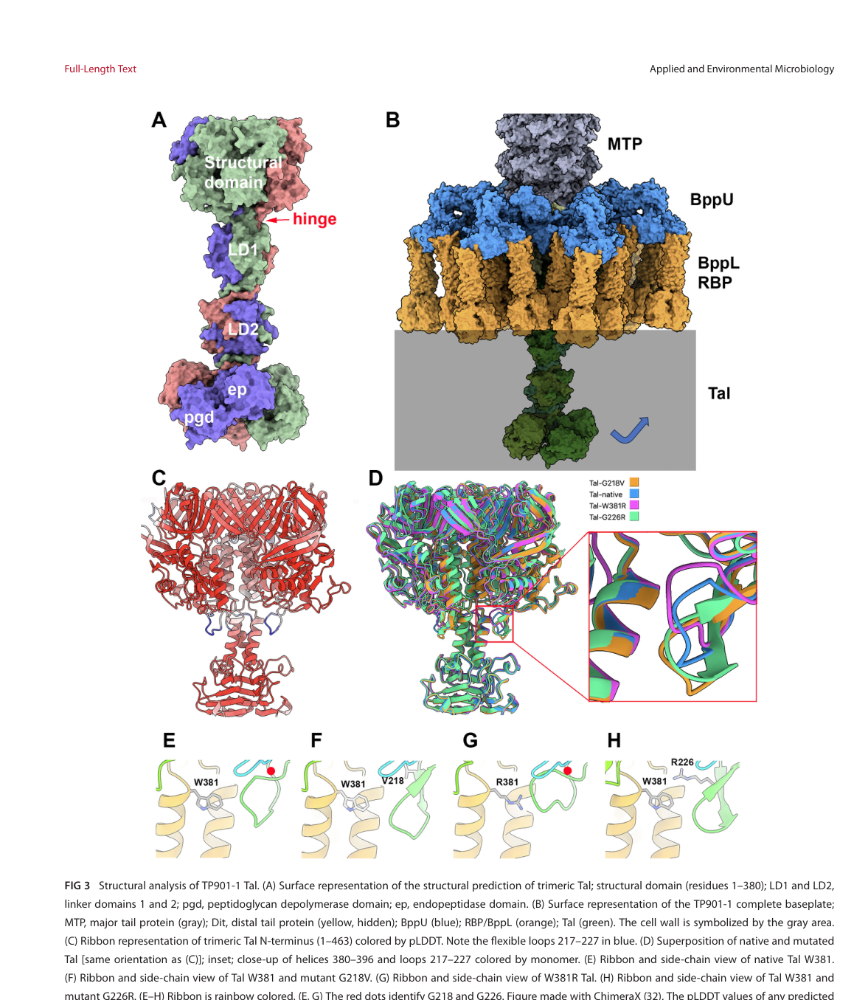

AB1I70_28485 is a 539-residue putative prophage tail protein encoded in the genome of Bacillus mobilis (a member of the Bacillus cereus group). Its function is inferred from domain architecture rather than direct experimental assay. The protein carries an N-terminal prophage-tail domain (Pfam PF18994, InterPro IPR044051) and a central tail-spike / prophage-tail domain (Pfam PF06605, InterPro IPR007119/IPR010572), and matches the NCBIfam profile TIGR01665 for putative phage anti-receptor proteins. This architecture is characteristic of tail-associated lysin / tail-associated endopeptidase (Tal/TAEP-like) proteins that occupy the distal tail tip / baseplate of tailed phages and prophages, where the conserved tape measure protein (TMP)-distal tail protein (Dit)-Tal module mediates host attachment and the localized degradation of host peptidoglycan needed for tail penetration and genome injection during infection. The protein is therefore most plausibly a virion-associated structural component with a putative peptidoglycan-cleaving (endopeptidase / muralytic) activity and/or a host-recognition (tail-spike, anti-receptor) role. The precise catalytic class is unresolved: PF06605 relatives map variously to metallopeptidase (MEROPS M23B) or cysteine peptidase (C104) families, and in some family members the Tal domain may act structurally rather than catalytically.
| GO Term | Evidence | Action | Reason |
|---|---|---|---|
|
GO:0061785
peptidoglycan endopeptidase activity
|
IEA
file:9BACI/AB1I70_28485/AB1I70_28485-uniprot.txt |
NEW |
Summary: NEW (proposed). The UniProt SubName "Prophage endopeptidase tail family protein" and the PF06605 (Prophage_tail / tail-spike) domain place this protein in the tail-associated endopeptidase (TAEP) family, whose members are peptidoglycan endopeptidases that cleave peptide bonds in the stem peptide or cross-bridge of host peptidoglycan during phage entry. This is the single most uncertain aspect of the annotation: there is NO direct enzymatic assay of this protein, and even at the family level some PF06605 Tal domains may be structural rather than catalytic.
Reason: Function is inferred from family/domain signatures (PF06605 and the "endopeptidase tail" SubName), not from any direct assay of AB1I70_28485. The TAEP family is defined by PF06605, and TAEPs are peptidoglycan endopeptidases that target peptide bonds in the stem peptide or cross-bridge. peptidoglycan endopeptidase activity (GO:0061785) is the most specific MF term that is still defensible. A more specific catalytic mechanism (metalloendopeptidase GO:0004222 vs cysteine-type peptidase GO:0008234) was deliberately NOT proposed because PF06605 relatives map to either MEROPS M23B (metallo) or C104 (cysteine), so the catalytic class for this protein cannot be assigned without sequence-level catalytic-site analysis. The Alrafaie survey also explicitly cautions that Tal-position domains may form complexes or act structurally rather than catalytically, so this MF carries real uncertainty.
Supporting Evidence:
file:9BACI/AB1I70_28485/AB1I70_28485-uniprot.txt
SubName: Full=Prophage endopeptidase tail family protein
file:9BACI/AB1I70_28485/AB1I70_28485-uniprot.txt
Pfam; PF06605; Prophage_tail; 1.
PMID:36787848
We identified 383 TAEP proteins via homology with predicted phage endopeptidase domains (Pfam: PF06605).
PMID:36787848
endopeptidases target peptide bonds within peptidoglycan- either in the peptide stem or cross-bridge.
file:9BACI/AB1I70_28485/AB1I70_28485-deep-research-falcon.md
Domain/family inference from PF06605 TAEP/Tal literature; no direct experimental characterization
|
|
GO:0098932
symbiont entry into host cell via disruption of host cell wall peptidoglycan
|
IEA
PMID:36787848 Enterococcal bacteriophage: A survey of the tail associated ... |
NEW |
Summary: NEW (proposed). As a tail-associated endopeptidase / Tal-like protein, AB1I70_28485 is predicted to locally degrade host cell-wall peptidoglycan to allow the phage tail to penetrate the envelope and deliver its genome, which is exactly the process described by GO:0098932 (symbiont entry into host cell via disruption of host cell wall peptidoglycan).
Reason: Inferred from family behavior, not direct assay. Tal-position PF06605 domains sit in the TMP-Dit-Tal tail module and the Tal lysin domain cleaves host peptidoglycan upon infection (Goulet 2020), enabling tail penetration / genome injection. GO:0098932 is the most precise virus-entry process term for peptidoglycan-disrupting entry; the broader parent GO:0046718 (symbiont entry into host cell) is captured implicitly. This is process inference contingent on the protein being catalytically active, which is not established for this specific protein.
Supporting Evidence:
PMID:32384698
this extension possesses a lysin domain (hence the original name of Tal) that cleaves the peptidoglycan upon infection.
PMID:36787848
endopeptidases target peptide bonds within peptidoglycan- either in the peptide stem or cross-bridge.
|
|
GO:0098025
virus tail, baseplate
|
IEA
PMID:39132999 The tal gene of lactococcal bacteriophage TP901-1 is involve... |
NEW |
Summary: NEW (proposed). The N-terminal prophage-tail domain (PF18994) plus the PF06605 tail-spike domain and the TIGR01665 phage anti-receptor profile indicate a virion tail-tip / baseplate structural component. In studied Tal proteins, a trimeric Tal protrudes at the distal extremity of the tail and forms the core of the baseplate.
Reason: Inferred from domain architecture and homolog structural data, not from direct localization of this protein. Tal-family proteins are virion tail-tip / baseplate components (Ruiz-Cruz 2024 places trimeric Tal at the distal tail extremity forming the baseplate core; Goulet 2020 places Tal in the conserved tail-tip TMP-Dit-Tal triad). virus tail, baseplate (GO:0098025) is the best-supported CC; the more general virus tail (GO:0098015) is its parent.
Supporting Evidence:
PMID:39132999
At the distal extremity of the tail, a trimeric Tal (tail-associated lysin) protrudes, forming the core of the baseplate.
PMID:32384698
the tape measure protein (TMP), the distal tail protein (Dit), and the tail-associated lysozyme (Tal), is conserved in all phages.
file:9BACI/AB1I70_28485/AB1I70_28485-uniprot.txt
/note="Tail spike"
|
|
GO:0098671
adhesion receptor-mediated virion attachment to host cell
|
IEA
file:9BACI/AB1I70_28485/AB1I70_28485-uniprot.txt |
NEW |
Summary: NEW (proposed, hedged). In addition to a putative catalytic role, this protein carries tail-spike (PF06605/IPR007119) and putative anti-receptor (TIGR01665) signatures, suggesting it may also participate in host-surface recognition / attachment by the tail distal end, as siphophages use a multi-protein recognition device at the tail tip to bind host receptors.
Reason: This is the more speculative of the proposed roles and is included to honestly reflect the dual (catalytic + structural/adhesion) signatures. The "Tail spike" domain (PF06605) and the TIGR01665 "putative anti-receptor protein" match point to a host-recognition role at the tail tip, where the baseplate / tail spike binds host receptors (Goulet 2020). No receptor-binding assay exists for this protein, so this is kept as a plausible structural/adhesion function rather than a core claim.
Supporting Evidence:
file:9BACI/AB1I70_28485/AB1I70_28485-uniprot.txt
NCBIfam; TIGR01665; put_anti_recept; 1.
file:9BACI/AB1I70_28485/AB1I70_28485-uniprot.txt
/note="Tail spike"
PMID:32384698
Siphophages use a multi-protein recognition device at the tail distal end, referred to as the tail spike or the baseplate, to bind either to proteinaceous receptors
|
Q: Does AB1I70_28485 have peptidoglycan-cleaving (endopeptidase / muralytic) activity, and if so, which bond in the peptidoglycan stem peptide or cross-bridge is the scissile target?
Q: Is the catalytic mechanism metallopeptidase (MEROPS M23B) or cysteine peptidase (C104), or is the PF06605 domain in this protein structural rather than catalytic?
Q: Is AB1I70_28485 a functional virion component of an inducible prophage in Bacillus mobilis, and does it act primarily in host attachment, in cell-wall penetration during entry, or in both?
Suggested experts: Christian Cambillau, Jennifer Mahony
Experiment: Express and purify recombinant AB1I70_28485 (and isolated domains) and assay muralytic activity against purified Bacillus peptidoglycan or whole cells (zymogram / turbidity-reduction assay), then identify the scissile bond by LC-MS muropeptide analysis of digestion products.
Hypothesis: AB1I70_28485 is a peptidoglycan endopeptidase that cleaves a peptide bond in the peptidoglycan stem peptide or cross-bridge.
Type: enzymatic / biochemical assay
Experiment: Test metal dependence (EDTA / divalent-cation inhibition vs cysteine-protease inhibitors), and use structure prediction plus site-directed mutagenesis of candidate catalytic residues to assign the MEROPS family.
Hypothesis: The catalytic class is metallopeptidase (M23B) rather than cysteine peptidase (C104).
Type: inhibitor profiling and mutagenesis
Experiment: Determine the genomic context (is it within an inducible prophage tail module, in TMP-Dit-Tal order?), induce the prophage, and use cryo-EM / immunolocalization to test whether the protein localizes to the virion tail tip and contributes to adsorption and DNA injection.
Hypothesis: AB1I70_28485 is a structural component of a Bacillus mobilis prophage tail tip / baseplate involved in host recognition and genome delivery.
Type: comparative genomics and structural virology
The research report should be a detailed narrative explaining the function, biological processes, and localization of the gene product. Citations should be given for all claims.
You should prioritize authoritative reviews and primary scientific literature when conducting research. You can supplement
this with annotations you find in gene/protein databases, but these can be outdated or inaccurate.
We are specifically interested in the primary function of the gene - for enzymes, what reaction is catalyzed, and what is the substrate specificity? For transporters, what is the substrate? For structural proteins or adapters, what is the broader structural role? For signaling molecules, what is the role in the pathway.
We are interested in where in or outside the cell the gene product carries out its function.
We are also interested in the signaling or biochemical pathways in which the gene functions. We are less interested in broad pleiotropic effects, except where these elucidate the precise role.
Include evidence where possible. We are interested in both experimental evidence as well as inference from structure, evolution, or bioinformatic analysis. Precise studies should be prioritized over high-throughput, where available.
The gene AB1I70_28485 (UniProt A0ABV4S5I6) is annotated (per the provided UniProt context) as a “prophage endopeptidase tail family protein” from Bacillus mobilis, with phage-tail/interactions-associated domains (PF06605 “Prophage_tail”; PF18994 “Prophage_tailD1”; and InterPro entries consistent with phage tail spike/structural tail modules). In the retrieved literature corpus, no paper directly mentions A0ABV4S5I6, AB1I70_28485, or EMBL MFA2795213.1, so the most defensible annotation is domain/family-based inference from well-studied tail-associated lysins/endopeptidases (Tal/TAEP) in Gram-positive phages/prophages. These proteins are typically virion tail-tip/baseplate components that provide localized peptidoglycan (PG) degradation to enable cell-wall penetration and genome injection, sometimes coupled to conformational transitions that gate DNA ejection. (alrafaie2023enterococcalbacteriophagea pages 4-6, ruizcruz2024thetalgene pages 1-2, zhydzetski2024agentstargetingthe pages 9-10)
Verified constraints for this report:
- Target identity is fixed to the user-provided UniProt record context: A0ABV4S5I6 = prophage endopeptidase tail family protein, gene/ORF name AB1I70_28485, organism Bacillus mobilis.
- Because no direct publications mentioning A0ABV4S5I6/AB1I70_28485/MFA2795213.1 were retrieved, this report does not attribute any experimental phenotype, pathway membership, or substrate specificity specifically to B. mobilis AB1I70_28485.
- All mechanistic/function claims below are explicitly framed as inference from homologous, experimentally studied Tal/TAEP proteins in Gram-positive bacteriophages/prophages, consistent with the PF06605 tail-associated endopeptidase family and placement in the TMP–Dit–Tal tail module. (alrafaie2023enterococcalbacteriophagea pages 4-6, goulet2020conservedanddiverse pages 1-3)
A prophage is a bacteriophage genome maintained within a bacterial host (integrated or plasmid-like), often encoding structural proteins and enzymes that can contribute to phage particle formation, induction, or phage-derived tail-like systems. Prophage regions in Bacillus genomes commonly contain tail structural genes (tail tube, tape measure protein) and cell-wall-acting enzymes (endolysins/holins/LysM-binding modules), illustrating the plausibility that AB1I70_28485 belongs to a prophage structural/entry apparatus rather than a bacterial housekeeping pathway. (pudova2022comparativegenomeanalysis pages 9-10)
In Gram-positive phages, tail-tip/baseplate assemblies frequently include cell-wall-degrading activities.
- TAEPs (tail-associated endopeptidases) are commonly detected by the Pfam PF06605 domain and function as peptidoglycan endopeptidases that cleave peptide bonds (stem peptide or cross-bridge), enabling localized “drilling” through PG during infection. (alrafaie2023enterococcalbacteriophagea pages 4-6)
- Virion-associated lysins (VALs) act during infection to locally open PG for genome delivery, whereas endolysins execute large-scale PG degradation for phage progeny release; holins coordinate endolysin access to the PG by permeabilizing the membrane. (zhydzetski2024agentstargetingthe pages 9-10)
A conserved organizational principle in many tailed phages (especially siphophages infecting Gram-positive bacteria) is a distal-tail scaffold comprising the tape measure protein (TMP), distal tail protein (Dit), and Tal (tail-associated lysin/lysozyme). This arrangement is conserved both genomically (gene order) and structurally at the tail tip, and is involved in tail assembly and host interaction. (goulet2020conservedanddiverse pages 1-3)
| Evidence type | Feature | Key details | Supporting sources (with year and URL) | Notes/uncertainty |
|---|---|---|---|---|
| Direct evidence unavailable | Gene/protein identity | No retrieved paper directly mentioned AB1I70_28485, UniProt A0ABV4S5I6, or EMBL MFA2795213.1; annotation therefore relies on the supplied UniProt description: "prophage endopeptidase tail family protein" from Bacillus mobilis. | UniProt record supplied in prompt; literature searches returned only homolog/inference-level evidence (alrafaie2023enterococcalbacteriophagea pages 4-6, pudova2022comparativegenomeanalysis pages 9-10) | High uncertainty for gene-specific claims; avoid over-interpreting as experimentally validated in B. mobilis. |
| Inference | Function | Most likely a tail-associated peptidoglycan hydrolase / endopeptidase used by a prophage-derived tail module to create localized cell-wall degradation during adsorption or genome injection, rather than a soluble housekeeping enzyme. PF06605-defined tail-associated endopeptidases are typically found in the Tal position of phage tail modules. | Alrafaie & Stafford 2023, Virus Research, https://doi.org/10.1016/j.virusres.2023.199073 (alrafaie2023enterococcalbacteriophagea pages 4-6, alrafaie2023enterococcalbacteriophagea pages 1-2); Zhydzetski et al. 2024, Molecules, https://doi.org/10.3390/molecules29174065 (zhydzetski2024agentstargetingthe pages 9-10) | Function is inferred from family/domain assignment, not from a direct assay on AB1I70_28485. |
| Inference | Substrate | The probable substrate is bacterial peptidoglycan, specifically peptide bonds in the stem peptide or cross-bridge rather than glycan bonds. Survey data for PF06605 TAEPs indicate endopeptidase activity against PG peptide linkages; some homologs map to M23B or C104 peptidase families. | Alrafaie & Stafford 2023, https://doi.org/10.1016/j.virusres.2023.199073 (alrafaie2023enterococcalbacteriophagea pages 4-6); Zhydzetski et al. 2024, https://doi.org/10.3390/molecules29174065 (zhydzetski2024agentstargetingthe pages 14-15) | Exact scissile bond for AB1I70_28485 is unknown; no direct biochemical substrate-specificity study was found. |
| Inference | Localization | Likely located at the distal tail/baseplate region of a prophage or prophage-like tail assembly, i.e., extracellular at the virion surface during host contact, where virion-associated lysins "drill" through peptidoglycan. | Goulet et al. 2020, Viruses, https://doi.org/10.3390/v12050512 (goulet2020conservedanddiverse pages 1-3); Ruiz-Cruz et al. 2024, Applied and Environmental Microbiology, https://doi.org/10.1128/aem.00694-24 (ruizcruz2024thetalgene pages 1-2); Zhydzetski et al. 2024, https://doi.org/10.3390/molecules29174065 (zhydzetski2024agentstargetingthe pages 9-10) | Localization is inferred from Tal/TAEP family behavior; subcellular localization in B. mobilis has not been directly shown. |
| Inference | Complex/module | Best placed in the conserved TMP–Dit–Tal initiator/adhesion module of Gram-positive siphophage tails. Tal proteins form part of the baseplate core and can mediate conformational changes linked to DNA ejection. | Goulet et al. 2020, https://doi.org/10.3390/v12050512 (goulet2020conservedanddiverse pages 1-3); Ruiz-Cruz et al. 2024, https://doi.org/10.1128/aem.00694-24 (ruizcruz2024thetalgene pages 1-2, ruizcruz2024thetalgene pages 10-12); Alrafaie & Stafford 2023, https://doi.org/10.1016/j.virusres.2023.199073 (alrafaie2023enterococcalbacteriophagea pages 9-12, alrafaie2023enterococcalbacteriophagea pages 6-8) | The exact prophage locus context around AB1I70_28485 was not independently retrieved here. |
| Inference | Domains | Supplied annotation lists Phage_tail_spike_N / Prophage_tail_N / Tail_dom / Prophage_tail / Prophage_tailD1 (IPR007119, IPR044051, IPR010572; PF06605, PF18994), consistent with a tail-associated lysin / Tal-like structural-catalytic protein with an N-terminal tail-assembly region and phage-tail-associated catalytic family assignment. | Domain evidence supplied in prompt; family behavior consistent with Alrafaie & Stafford 2023, https://doi.org/10.1016/j.virusres.2023.199073 (alrafaie2023enterococcalbacteriophagea pages 4-6); Ruiz-Cruz et al. 2024, https://doi.org/10.1128/aem.00694-24 (ruizcruz2024thetalgene pages 1-2, ruizcruz2024thetalgene media c526232a) | Domain composition supports phage-tail association, but exact domain boundaries and catalytic residues for this protein were not available from retrieved literature. |
| Inference | Biological process | Most probable role is in phage adsorption/entry: limited hydrolysis of host cell wall to facilitate tail penetration and/or DNA injection. Recent Tal work shows tail-associated lysins can be mechanistically coupled to triggered genome release after receptor engagement. | Ruiz-Cruz et al. 2024, https://doi.org/10.1128/aem.00694-24 (ruizcruz2024thetalgene pages 1-2, ruizcruz2024thetalgene pages 10-12); Zhydzetski et al. 2024, https://doi.org/10.3390/molecules29174065 (zhydzetski2024agentstargetingthe pages 9-10) | This is a mechanistic inference from Gram-positive phage Tal proteins, not direct proof for AB1I70_28485. |
| Inference | Taxonomic/host context | Bacillus genomes commonly carry prophage structural and lytic genes, including tail proteins, tape-measure proteins, amidases, endolysins, LysM-containing proteins, and other wall-targeting functions, supporting the plausibility of a prophage-tail role in Bacillus spp. | Pudova et al. 2022, Genes, https://doi.org/10.3390/genes13030409 (pudova2022comparativegenomeanalysis pages 9-10, pudova2022comparativegenomeanalysis pages 10-12); Nakonieczna et al. 2022, Viruses, https://doi.org/10.3390/v14020213 (nakonieczna2022threenovelbacteriophages pages 16-17) | This supports organismal plausibility only; it does not specifically validate AB1I70_28485. |
| Inference | Broader significance / applications | Homologous tail-associated lysins and virion-associated muralytic enzymes are being developed as enzybiotics, biofilm-control agents, and diagnostic targeting modules; these applications support interest in proteins of this family even when gene-specific data are sparse. | Zhydzetski et al. 2024, https://doi.org/10.3390/molecules29174065 (zhydzetski2024agentstargetingthe pages 18-19, zhydzetski2024agentstargetingthe pages 19-21, zhydzetski2024agentstargetingthe pages 25-26, zhydzetski2024agentstargetingthe pages 26-28); Alrafaie & Stafford 2023, https://doi.org/10.1016/j.virusres.2023.199073 (alrafaie2023enterococcalbacteriophagea pages 1-2) | Application evidence pertains to homologous lysins, not directly to AB1I70_28485. |
Table: This table summarizes the most defensible functional annotation for Bacillus mobilis AB1I70_28485 using only direct search results and domain/family-based inference from phage tail-associated endopeptidase literature. It highlights where evidence is indirect and where uncertainty remains high.
Given the PF06605 “prophage tail” association (per prompt) and the “prophage endopeptidase tail family” description, AB1I70_28485 is most plausibly a tail-associated peptidoglycan endopeptidase (TAEP/Tal-like) whose role is to support phage adsorption/entry by localized PG peptide bond cleavage, facilitating tail penetration and genome injection. (alrafaie2023enterococcalbacteriophagea pages 4-6, zhydzetski2024agentstargetingthe pages 9-10)
A large phage/prophage survey of tail-associated lysins identified PF06605 TAEPs as a dominant class and emphasized their localization in the Tal position (TMP–Dit–Tal) in siphovirus tail modules, consistent with a distal tail tip function rather than cytosolic metabolism. (alrafaie2023enterococcalbacteriophagea pages 4-6, alrafaie2023enterococcalbacteriophagea pages 6-8)
The clearest family-level evidence indicates PF06605 TAEPs are peptidoglycan endopeptidases that cleave peptide bonds in the stem peptide and/or cross-bridge, not the glycan backbone (which is instead targeted by lysozymes/transglycosylases). (alrafaie2023enterococcalbacteriophagea pages 4-6)
Within TAEP representatives, MEROPS-based assignments include M23B and C104 peptidase families in some cases, implying that depending on sequence specifics, different peptide bond targets in PG can be used across related proteins. (alrafaie2023enterococcalbacteriophagea pages 4-6)
Important limitation: no retrieved source provides the exact scissile bond or kinetic parameters for AB1I70_28485 specifically.
The best-supported localization for a Tal/TAEP-family protein is on the phage particle tail tip/baseplate (virion-associated; extracellular during host contact). In conceptual terms, VAL/TAL proteins act by locally “drilling” through peptidoglycan to enable genome injection. (zhydzetski2024agentstargetingthe pages 9-10)
Recent experimental work on the Gram-positive phage TP901-1 places Tal as a trimer at the distal tail extremity forming the baseplate core, consistent with a tail-tip location for proteins of this family. (ruizcruz2024thetalgene pages 1-2)
A key mechanistic refinement from 2024 work is that Tal can be directly involved in the transition from reversible adsorption to DNA ejection. In TP901-1, single amino-acid substitutions in the N-terminal gp27-like domain of Tal enabled phage infection of resistant hosts by favoring conformational changes that facilitate TMP release and DNA ejection, even in the absence of an otherwise required host trigger. (ruizcruz2024thetalgene pages 1-2)
This supports a model where Tal-family proteins are not merely catalytic “drills” but may also serve as mechanical/structural gating elements in the tail-tip apparatus.
A 2023 survey of enterococcal phage/prophage genomes provides quantitative context for PF06605-identified TAEPs:
- In a dataset of lysins, 383 TAEPs were identified and these accounted for ~70.4% of detected tail-associated lysin types in that analysis. (alrafaie2023enterococcalbacteriophagea pages 4-6)
- The TAEPs were commonly located in the Tal position in the TMP–Dit–Tal module, reinforcing the distal tail association. (alrafaie2023enterococcalbacteriophagea pages 4-6)
- The same study reported additional tail-associated enzymatic strategies (e.g., lytic transglycosylases embedded in TMPs), illustrating modularity and co-occurrence of multiple wall-targeting domains in tails. (alrafaie2023enterococcalbacteriophagea pages 6-8)
While this dataset is Enterococcus-focused, it provides a robust, recent quantitative framework for interpreting PF06605-associated annotations as tail-associated entry enzymes.
Ruiz-Cruz et al. (2024) provide a mechanistic link between Tal structure and genome delivery: Tal is a distal-tail trimer forming the baseplate core, and point mutations in its N-terminal conserved domain can alter infection outcomes by enabling DNA release under otherwise restrictive host envelope conditions. (ruizcruz2024thetalgene pages 1-2)
A 2024 review synthesizes the application landscape for PG-degrading enzymes including endolysins and virion-associated muralytic enzymes (VALs/TALs): they can be developed as recombinant protein antibacterials with rapid killing kinetics and selectivity, with engineered “generations” aimed at improved spectrum and pharmacokinetics; some first-generation lysins are in early clinical trials. (zhydzetski2024agentstargetingthe pages 19-21)
The same review highlights resistance-related observations: sub-lethal exposure of S. aureus increased MICs 42-fold for LysK and 585-fold for lysostaphin, whereas engineered/chimeric lysins reportedly show much smaller resistance increases, motivating multi-domain designs to reduce resistance emergence. (zhydzetski2024agentstargetingthe pages 18-19)
Although AB1I70_28485 itself is not yet characterized as a product, its inferred family (tail-associated PG hydrolases/endopeptidases) is part of a broader class of enzymes being pursued as:
- Antibacterial therapeutics (enzybiotics): exogenous lysins can rapidly digest Gram-positive PG, including antibiotic-resistant strains; they can also act against biofilms in vitro and in vivo (animal models). (zhydzetski2024agentstargetingthe pages 18-19)
- Adjuncts and engineered formats: chimeric lysins, PEG-conjugated forms, and combinations with antibiotics are being explored to improve stability, half-life, and efficacy. (zhydzetski2024agentstargetingthe pages 19-21)
- Diagnostics and targeting tools: binding domains and engineered constructs (e.g., fluorescent fusions) can be used for pathogen detection and specificity tuning, illustrating how phage structural/entry modules are being repurposed. (zhydzetski2024agentstargetingthe pages 25-26)
Ruiz-Cruz et al. provide figures that (i) show Tal domain architecture and (ii) depict Tal positioning in the baseplate and a proposed early infection model including conformational changes enabling TMP release and DNA ejection. These schematics support the inference that Tal-family proteins are tail-tip/baseplate components linked to genome delivery. (ruizcruz2024thetalgene media c526232a, ruizcruz2024thetalgene media b6538667)
Recommended annotation for AB1I70_28485 (A0ABV4S5I6):
- Protein name: Prophage tail-associated peptidoglycan endopeptidase (Tal/TAEP-like)
- Primary role: Phage/prophage tail-tip component mediating localized PG peptide-bond cleavage and contributing to tail penetration/genome injection
- Likely substrate: Peptidoglycan peptide stem/cross-bridge (endopeptidase activity)
- Localization: Virion tail tip/baseplate (extracellular during host contact)
- Evidence: Domain/family inference from PF06605 TAEP/Tal literature; no direct experimental characterization of B. mobilis AB1I70_28485 located in retrieved corpus
References
(alrafaie2023enterococcalbacteriophagea pages 4-6): Alhassan Alrafaie and Graham Philip Stafford. Enterococcal bacteriophage: a survey of the tail associated lysin landscape. Virus Research, Feb 2023. URL: https://doi.org/10.1016/j.virusres.2023.199073, doi:10.1016/j.virusres.2023.199073. This article has 14 citations and is from a peer-reviewed journal.
(ruizcruz2024thetalgene pages 1-2): Sofía Ruiz-Cruz, Andrea Erazo Garzon, Christian Cambillau, Guillermo Ortiz Charneco, Gabriele Andrea Lugli, Marco Ventura, Jennifer Mahony, and Douwe van Sinderen. The tal gene of lactococcal bacteriophage tp901-1 is involved in dna release following host adsorption. Sep 2024. URL: https://doi.org/10.1128/aem.00694-24, doi:10.1128/aem.00694-24. This article has 1 citations and is from a peer-reviewed journal.
(zhydzetski2024agentstargetingthe pages 9-10): Aliaksandr Zhydzetski, Zuzanna Głowacka-Grzyb, Michal Bukowski, Tomasz Żądło, Emilia Bonar, and Benedykt Władyka. Agents targeting the bacterial cell wall as tools to combat gram-positive pathogens. Molecules, 29:4065, Aug 2024. URL: https://doi.org/10.3390/molecules29174065, doi:10.3390/molecules29174065. This article has 72 citations.
(goulet2020conservedanddiverse pages 1-3): Adeline Goulet, Silvia Spinelli, Jennifer Mahony, and Christian Cambillau. Conserved and diverse traits of adhesion devices from siphoviridae recognizing proteinaceous or saccharidic receptors. Viruses, 12:512, May 2020. URL: https://doi.org/10.3390/v12050512, doi:10.3390/v12050512. This article has 90 citations.
(pudova2022comparativegenomeanalysis pages 9-10): Daria S. Pudova, Anna A. Toymentseva, Natalia E. Gogoleva, Elena I. Shagimardanova, Ayslu M. Mardanova, and Margarita R. Sharipova. Comparative genome analysis of two bacillus pumilus strains producing high level of extracellular hydrolases. Genes, 13:409, Feb 2022. URL: https://doi.org/10.3390/genes13030409, doi:10.3390/genes13030409. This article has 20 citations.
(alrafaie2023enterococcalbacteriophagea pages 1-2): Alhassan Alrafaie and Graham Philip Stafford. Enterococcal bacteriophage: a survey of the tail associated lysin landscape. Virus Research, Feb 2023. URL: https://doi.org/10.1016/j.virusres.2023.199073, doi:10.1016/j.virusres.2023.199073. This article has 14 citations and is from a peer-reviewed journal.
(zhydzetski2024agentstargetingthe pages 14-15): Aliaksandr Zhydzetski, Zuzanna Głowacka-Grzyb, Michal Bukowski, Tomasz Żądło, Emilia Bonar, and Benedykt Władyka. Agents targeting the bacterial cell wall as tools to combat gram-positive pathogens. Molecules, 29:4065, Aug 2024. URL: https://doi.org/10.3390/molecules29174065, doi:10.3390/molecules29174065. This article has 72 citations.
(ruizcruz2024thetalgene pages 10-12): Sofía Ruiz-Cruz, Andrea Erazo Garzon, Christian Cambillau, Guillermo Ortiz Charneco, Gabriele Andrea Lugli, Marco Ventura, Jennifer Mahony, and Douwe van Sinderen. The tal gene of lactococcal bacteriophage tp901-1 is involved in dna release following host adsorption. Sep 2024. URL: https://doi.org/10.1128/aem.00694-24, doi:10.1128/aem.00694-24. This article has 1 citations and is from a peer-reviewed journal.
(alrafaie2023enterococcalbacteriophagea pages 9-12): Alhassan Alrafaie and Graham Philip Stafford. Enterococcal bacteriophage: a survey of the tail associated lysin landscape. Virus Research, Feb 2023. URL: https://doi.org/10.1016/j.virusres.2023.199073, doi:10.1016/j.virusres.2023.199073. This article has 14 citations and is from a peer-reviewed journal.
(alrafaie2023enterococcalbacteriophagea pages 6-8): Alhassan Alrafaie and Graham Philip Stafford. Enterococcal bacteriophage: a survey of the tail associated lysin landscape. Virus Research, Feb 2023. URL: https://doi.org/10.1016/j.virusres.2023.199073, doi:10.1016/j.virusres.2023.199073. This article has 14 citations and is from a peer-reviewed journal.
(ruizcruz2024thetalgene media c526232a): Sofía Ruiz-Cruz, Andrea Erazo Garzon, Christian Cambillau, Guillermo Ortiz Charneco, Gabriele Andrea Lugli, Marco Ventura, Jennifer Mahony, and Douwe van Sinderen. The tal gene of lactococcal bacteriophage tp901-1 is involved in dna release following host adsorption. Sep 2024. URL: https://doi.org/10.1128/aem.00694-24, doi:10.1128/aem.00694-24. This article has 1 citations and is from a peer-reviewed journal.
(pudova2022comparativegenomeanalysis pages 10-12): Daria S. Pudova, Anna A. Toymentseva, Natalia E. Gogoleva, Elena I. Shagimardanova, Ayslu M. Mardanova, and Margarita R. Sharipova. Comparative genome analysis of two bacillus pumilus strains producing high level of extracellular hydrolases. Genes, 13:409, Feb 2022. URL: https://doi.org/10.3390/genes13030409, doi:10.3390/genes13030409. This article has 20 citations.
(nakonieczna2022threenovelbacteriophages pages 16-17): Aleksandra Nakonieczna, Paweł Rutyna, Magdalena Fedorowicz, Magdalena Kwiatek, Lidia Mizak, and Małgorzata Łobocka. Three novel bacteriophages, j5a, f16ba, and z1a, specific for bacillus anthracis, define a new clade of historical wbeta phage relatives. Viruses, 14:213, Jan 2022. URL: https://doi.org/10.3390/v14020213, doi:10.3390/v14020213. This article has 17 citations.
(zhydzetski2024agentstargetingthe pages 18-19): Aliaksandr Zhydzetski, Zuzanna Głowacka-Grzyb, Michal Bukowski, Tomasz Żądło, Emilia Bonar, and Benedykt Władyka. Agents targeting the bacterial cell wall as tools to combat gram-positive pathogens. Molecules, 29:4065, Aug 2024. URL: https://doi.org/10.3390/molecules29174065, doi:10.3390/molecules29174065. This article has 72 citations.
(zhydzetski2024agentstargetingthe pages 19-21): Aliaksandr Zhydzetski, Zuzanna Głowacka-Grzyb, Michal Bukowski, Tomasz Żądło, Emilia Bonar, and Benedykt Władyka. Agents targeting the bacterial cell wall as tools to combat gram-positive pathogens. Molecules, 29:4065, Aug 2024. URL: https://doi.org/10.3390/molecules29174065, doi:10.3390/molecules29174065. This article has 72 citations.
(zhydzetski2024agentstargetingthe pages 25-26): Aliaksandr Zhydzetski, Zuzanna Głowacka-Grzyb, Michal Bukowski, Tomasz Żądło, Emilia Bonar, and Benedykt Władyka. Agents targeting the bacterial cell wall as tools to combat gram-positive pathogens. Molecules, 29:4065, Aug 2024. URL: https://doi.org/10.3390/molecules29174065, doi:10.3390/molecules29174065. This article has 72 citations.
(zhydzetski2024agentstargetingthe pages 26-28): Aliaksandr Zhydzetski, Zuzanna Głowacka-Grzyb, Michal Bukowski, Tomasz Żądło, Emilia Bonar, and Benedykt Władyka. Agents targeting the bacterial cell wall as tools to combat gram-positive pathogens. Molecules, 29:4065, Aug 2024. URL: https://doi.org/10.3390/molecules29174065, doi:10.3390/molecules29174065. This article has 72 citations.
(ruizcruz2024thetalgene media b6538667): Sofía Ruiz-Cruz, Andrea Erazo Garzon, Christian Cambillau, Guillermo Ortiz Charneco, Gabriele Andrea Lugli, Marco Ventura, Jennifer Mahony, and Douwe van Sinderen. The tal gene of lactococcal bacteriophage tp901-1 is involved in dna release following host adsorption. Sep 2024. URL: https://doi.org/10.1128/aem.00694-24, doi:10.1128/aem.00694-24. This article has 1 citations and is from a peer-reviewed journal.

id: A0ABV4S5I6
gene_symbol: AB1I70_28485
product_type: PROTEIN
status: DRAFT
taxon:
id: NCBITaxon:2026190
label: Bacillus mobilis
description: >-
AB1I70_28485 is a 539-residue putative prophage tail protein encoded in the
genome of Bacillus mobilis (a member of the Bacillus cereus group). Its
function is inferred from domain architecture rather than direct experimental
assay. The protein carries an N-terminal prophage-tail domain (Pfam PF18994,
InterPro IPR044051) and a central tail-spike / prophage-tail domain (Pfam
PF06605, InterPro IPR007119/IPR010572), and matches the NCBIfam profile
TIGR01665 for putative phage anti-receptor proteins. This architecture is
characteristic of tail-associated lysin / tail-associated endopeptidase
(Tal/TAEP-like) proteins that occupy the distal tail tip / baseplate of
tailed phages and prophages, where the conserved tape measure protein
(TMP)-distal tail protein (Dit)-Tal module mediates host attachment and the
localized degradation of host peptidoglycan needed for tail penetration and
genome injection during infection. The protein is therefore most plausibly a
virion-associated structural component with a putative peptidoglycan-cleaving
(endopeptidase / muralytic) activity and/or a host-recognition (tail-spike,
anti-receptor) role. The precise catalytic class is unresolved: PF06605
relatives map variously to metallopeptidase (MEROPS M23B) or cysteine
peptidase (C104) families, and in some family members the Tal domain may act
structurally rather than catalytically.
existing_annotations:
- term:
id: GO:0061785
label: peptidoglycan endopeptidase activity
evidence_type: IEA
original_reference_id: file:9BACI/AB1I70_28485/AB1I70_28485-uniprot.txt
review:
summary: >-
NEW (proposed). The UniProt SubName "Prophage endopeptidase tail family
protein" and the PF06605 (Prophage_tail / tail-spike) domain place this
protein in the tail-associated endopeptidase (TAEP) family, whose members
are peptidoglycan endopeptidases that cleave peptide bonds in the stem
peptide or cross-bridge of host peptidoglycan during phage entry. This is
the single most uncertain aspect of the annotation: there is NO direct
enzymatic assay of this protein, and even at the family level some PF06605
Tal domains may be structural rather than catalytic.
action: NEW
reason: >-
Function is inferred from family/domain signatures (PF06605 and the
"endopeptidase tail" SubName), not from any direct assay of AB1I70_28485.
The TAEP family is defined by PF06605, and TAEPs are peptidoglycan
endopeptidases that target peptide bonds in the stem peptide or
cross-bridge. peptidoglycan endopeptidase activity (GO:0061785) is the
most specific MF term that is still defensible. A more specific catalytic
mechanism (metalloendopeptidase GO:0004222 vs cysteine-type peptidase
GO:0008234) was deliberately NOT proposed because PF06605 relatives map to
either MEROPS M23B (metallo) or C104 (cysteine), so the catalytic class
for this protein cannot be assigned without sequence-level catalytic-site
analysis. The Alrafaie survey also explicitly cautions that Tal-position
domains may form complexes or act structurally rather than catalytically,
so this MF carries real uncertainty.
supported_by:
- reference_id: file:9BACI/AB1I70_28485/AB1I70_28485-uniprot.txt
supporting_text: 'SubName: Full=Prophage endopeptidase tail family protein'
- reference_id: file:9BACI/AB1I70_28485/AB1I70_28485-uniprot.txt
supporting_text: Pfam; PF06605; Prophage_tail; 1.
- reference_id: PMID:36787848
supporting_text: >-
We identified 383 TAEP proteins via homology with predicted phage
endopeptidase domains (Pfam: PF06605).
- reference_id: PMID:36787848
supporting_text: >-
endopeptidases target peptide bonds within peptidoglycan- either in the
peptide stem or cross-bridge.
- reference_id: file:9BACI/AB1I70_28485/AB1I70_28485-deep-research-falcon.md
supporting_text: >-
Domain/family inference from PF06605 TAEP/Tal literature; no direct
experimental characterization
- term:
id: GO:0098932
label: symbiont entry into host cell via disruption of host cell wall peptidoglycan
evidence_type: IEA
original_reference_id: PMID:36787848
review:
summary: >-
NEW (proposed). As a tail-associated endopeptidase / Tal-like protein,
AB1I70_28485 is predicted to locally degrade host cell-wall peptidoglycan
to allow the phage tail to penetrate the envelope and deliver its genome,
which is exactly the process described by GO:0098932 (symbiont entry into
host cell via disruption of host cell wall peptidoglycan).
action: NEW
reason: >-
Inferred from family behavior, not direct assay. Tal-position PF06605
domains sit in the TMP-Dit-Tal tail module and the Tal lysin domain
cleaves host peptidoglycan upon infection (Goulet 2020), enabling tail
penetration / genome injection. GO:0098932 is the most precise
virus-entry process term for peptidoglycan-disrupting entry; the broader
parent GO:0046718 (symbiont entry into host cell) is captured implicitly.
This is process inference contingent on the protein being catalytically
active, which is not established for this specific protein.
supported_by:
- reference_id: PMID:32384698
supporting_text: >-
this extension possesses a lysin domain (hence the original name of
Tal) that cleaves the peptidoglycan upon infection.
- reference_id: PMID:36787848
supporting_text: >-
endopeptidases target peptide bonds within peptidoglycan- either in the
peptide stem or cross-bridge.
- term:
id: GO:0098025
label: virus tail, baseplate
evidence_type: IEA
original_reference_id: PMID:39132999
review:
summary: >-
NEW (proposed). The N-terminal prophage-tail domain (PF18994) plus the
PF06605 tail-spike domain and the TIGR01665 phage anti-receptor profile
indicate a virion tail-tip / baseplate structural component. In studied
Tal proteins, a trimeric Tal protrudes at the distal extremity of the tail
and forms the core of the baseplate.
action: NEW
reason: >-
Inferred from domain architecture and homolog structural data, not from
direct localization of this protein. Tal-family proteins are virion
tail-tip / baseplate components (Ruiz-Cruz 2024 places trimeric Tal at the
distal tail extremity forming the baseplate core; Goulet 2020 places Tal
in the conserved tail-tip TMP-Dit-Tal triad). virus tail, baseplate
(GO:0098025) is the best-supported CC; the more general virus tail
(GO:0098015) is its parent.
supported_by:
- reference_id: PMID:39132999
supporting_text: >-
At the distal extremity of the tail, a trimeric Tal (tail-associated
lysin) protrudes, forming the core of the baseplate.
- reference_id: PMID:32384698
supporting_text: >-
the tape measure protein (TMP), the distal tail protein (Dit), and the
tail-associated lysozyme (Tal), is conserved in all phages.
- reference_id: file:9BACI/AB1I70_28485/AB1I70_28485-uniprot.txt
supporting_text: '/note="Tail spike"'
- term:
id: GO:0098671
label: adhesion receptor-mediated virion attachment to host cell
evidence_type: IEA
original_reference_id: file:9BACI/AB1I70_28485/AB1I70_28485-uniprot.txt
review:
summary: >-
NEW (proposed, hedged). In addition to a putative catalytic role, this
protein carries tail-spike (PF06605/IPR007119) and putative anti-receptor
(TIGR01665) signatures, suggesting it may also participate in host-surface
recognition / attachment by the tail distal end, as siphophages use a
multi-protein recognition device at the tail tip to bind host receptors.
action: NEW
reason: >-
This is the more speculative of the proposed roles and is included to
honestly reflect the dual (catalytic + structural/adhesion) signatures.
The "Tail spike" domain (PF06605) and the TIGR01665 "putative
anti-receptor protein" match point to a host-recognition role at the tail
tip, where the baseplate / tail spike binds host receptors (Goulet 2020).
No receptor-binding assay exists for this protein, so this is kept as a
plausible structural/adhesion function rather than a core claim.
supported_by:
- reference_id: file:9BACI/AB1I70_28485/AB1I70_28485-uniprot.txt
supporting_text: NCBIfam; TIGR01665; put_anti_recept; 1.
- reference_id: file:9BACI/AB1I70_28485/AB1I70_28485-uniprot.txt
supporting_text: '/note="Tail spike"'
- reference_id: PMID:32384698
supporting_text: >-
Siphophages use a multi-protein recognition device at the tail distal
end, referred to as the tail spike or the baseplate, to bind either to
proteinaceous receptors
references:
- id: PMID:36787848
title: 'Enterococcal bacteriophage: A survey of the tail associated lysin landscape.'
findings:
- statement: >-
Tail-associated endopeptidases (TAEPs) are defined by the Pfam PF06605
domain; 383 such proteins were identified across enterococcal phage and
prophage genomes, making them the dominant tail-associated lysin class.
supporting_text: >-
We identified 383 TAEP proteins via homology with predicted phage
endopeptidase domains (Pfam: PF06605).
- statement: >-
PF06605 domains occupy the Tal position of the TMP-Dit-Tal tail module,
though it is uncertain whether they are catalytic, form active complexes,
or act structurally.
supporting_text: >-
These domains are all found in the Tal position (i.e. TMP-Dit-Tal),
although it is not clear if they have an endopeptidase activity themselves
or are involved in forming active complexes or act in a structural manner.
- statement: >-
Endopeptidases of this class cleave peptide bonds in the peptidoglycan
stem peptide or cross-bridge; representative TAEP sequences map to MEROPS
M23B and C104 peptidase families, so the catalytic class is not uniform.
supporting_text: >-
endopeptidases target peptide bonds within peptidoglycan- either in the
peptide stem or cross-bridge.
reference_review:
relevance: HIGH
correctness: VERIFIED
review_notes: >-
PMC10194240, full text in cache. Directly defines the PF06605 TAEP family
that AB1I70_28485 belongs to and frames the catalytic-class uncertainty
(M23B vs C104) that justifies staying at the generic peptidoglycan
endopeptidase level. Enterococcus-focused, so all use here is family-level
inference, not direct evidence for this Bacillus protein.
- id: PMID:39132999
title: >-
The tal gene of lactococcal bacteriophage TP901-1 is involved in DNA release
following host adsorption.
findings:
- statement: >-
A trimeric Tal protein protrudes at the distal tail extremity of phage
TP901-1 and forms the core of the baseplate.
supporting_text: >-
At the distal extremity of the tail, a trimeric Tal (tail-associated
lysin) protrudes, forming the core of the baseplate.
- statement: >-
Single amino-acid changes in Tal can facilitate release of the tape
measure protein and subsequent DNA ejection, linking Tal to genome
delivery after host adsorption.
supporting_text: >-
facilitate release of the tape measure protein from the tail
reference_review:
relevance: HIGH
correctness: VERIFIED
review_notes: >-
PMC11409707, full text in cache. Experimental support for Tal as a
distal-tail / baseplate structural component coupled to DNA release.
Lactococcal phage, so used as homolog inference for localization and the
entry/injection process.
- id: PMID:32384698
title: >-
Conserved and Diverse Traits of Adhesion Devices from Siphoviridae
Recognizing Proteinaceous or Saccharidic Receptors.
findings:
- statement: >-
The tail-tip triad of tape measure protein (TMP), distal tail protein
(Dit) and tail-associated lysozyme (Tal) is conserved across phages and
serves as a platform for receptor-binding and ancillary proteins.
supporting_text: >-
the tape measure protein (TMP), the distal tail protein (Dit), and the
tail-associated lysozyme (Tal), is conserved in all phages.
- statement: >-
The Tal extension possesses a lysin domain that cleaves host peptidoglycan
upon infection.
supporting_text: >-
this extension possesses a lysin domain (hence the original name of Tal)
that cleaves the peptidoglycan upon infection.
- statement: >-
Siphophages recognize host receptors through a tail-tip device (tail spike
or baseplate) at the distal tail end.
supporting_text: >-
Siphophages use a multi-protein recognition device at the tail distal end,
referred to as the tail spike or the baseplate, to bind either to
proteinaceous receptors
reference_review:
relevance: HIGH
correctness: VERIFIED
review_notes: >-
PMC7291167, full text in cache. Review establishing the conserved
TMP-Dit-Tal tail-tip architecture, the Tal peptidoglycan-cleaving role,
and the tail-spike/baseplate host-recognition function, all used as
family-level inference for this protein.
- id: PMID:39274911
title: >-
Agents Targeting the Bacterial Cell Wall as Tools to Combat Gram-Positive
Pathogens.
findings:
- statement: >-
Review of agents targeting the bacterial cell wall. It classifies the
peptidoglycan-degrading enzymes, including endopeptidases that cleave the
peptide bond in the crosslink or stem peptide, the catalytic class to
which a PF06605 tail-associated endopeptidase belongs.
supporting_text: >-
enzymes termed autolysins, including glycan hydrolases (degrading within
the glycan strands), amidases (digesting the amide bond between MurNAc and
the stem peptide), endopeptidases (cleaving the peptide bond in
crosslinking or the stem peptide), and carboxypeptidases (cutting off the
terminal residues of the stem peptide).
reference_review:
relevance: MEDIUM
correctness: VERIFIED
review_notes: >-
PMC11396672, full text in cache (full_text_available true). Background
review of cell-wall-targeting antibacterials; the falcon deep research
drew on it for the virion-associated-lysin / peptidoglycan-hydrolase
framing. Used only for the family-level classification of peptidoglycan
endopeptidases, not for any organism-specific claim about this protein.
- id: file:9BACI/AB1I70_28485/AB1I70_28485-uniprot.txt
title: UniProt record for AB1I70_28485 (A0ABV4S5I6)
findings:
- statement: >-
UniProt SubName is "Prophage endopeptidase tail family protein"; the
record lists PF06605 (Prophage_tail), PF18994 (Prophage_tailD1), InterPro
tail/tail-spike domains, and the TIGR01665 putative anti-receptor profile.
supporting_text: 'SubName: Full=Prophage endopeptidase tail family protein'
- id: file:9BACI/AB1I70_28485/AB1I70_28485-deep-research-falcon.md
title: Falcon deep research report for AB1I70_28485
findings:
- statement: >-
Falcon deep research found no publication directly mentioning this
protein and concluded the most defensible annotation is domain/family
inference of a tail-associated peptidoglycan endopeptidase (TAEP/Tal-like).
supporting_text: >-
Domain/family inference from PF06605 TAEP/Tal literature; no direct
experimental characterization
core_functions:
- description: >-
Putative tail-associated peptidoglycan endopeptidase (Tal/TAEP-like): a
virion tail-tip / baseplate component predicted to locally cleave host
cell-wall peptidoglycan to enable phage tail penetration and genome
injection during infection. Inferred from PF06605 / "endopeptidase tail"
family membership; catalytic class (metallo vs cysteine) and actual activity
are unverified for this specific protein.
molecular_function:
id: GO:0061785
label: peptidoglycan endopeptidase activity
directly_involved_in:
- id: GO:0098932
label: symbiont entry into host cell via disruption of host cell wall peptidoglycan
supported_by:
- reference_id: PMID:36787848
supporting_text: >-
We identified 383 TAEP proteins via homology with predicted phage
endopeptidase domains (Pfam: PF06605).
- reference_id: PMID:32384698
supporting_text: >-
this extension possesses a lysin domain (hence the original name of Tal)
that cleaves the peptidoglycan upon infection.
- description: >-
Putative virion structural / host-recognition component of the prophage tail
tip (virus tail baseplate, GO:0098025). The PF06605 tail-spike domain and the
TIGR01665 anti-receptor signature suggest a role in host-surface recognition /
attachment in addition to (or instead of) catalysis, consistent with the
structural function some Tal-family proteins adopt.
directly_involved_in:
- id: GO:0098671
label: adhesion receptor-mediated virion attachment to host cell
supported_by:
- reference_id: file:9BACI/AB1I70_28485/AB1I70_28485-uniprot.txt
supporting_text: NCBIfam; TIGR01665; put_anti_recept; 1.
- reference_id: PMID:32384698
supporting_text: >-
Siphophages use a multi-protein recognition device at the tail distal
end, referred to as the tail spike or the baseplate, to bind either to
proteinaceous receptors
proposed_new_terms: []
suggested_questions:
- question: >-
Does AB1I70_28485 have peptidoglycan-cleaving (endopeptidase / muralytic)
activity, and if so, which bond in the peptidoglycan stem peptide or
cross-bridge is the scissile target?
experts: []
- question: >-
Is the catalytic mechanism metallopeptidase (MEROPS M23B) or cysteine
peptidase (C104), or is the PF06605 domain in this protein structural rather
than catalytic?
experts: []
- question: >-
Is AB1I70_28485 a functional virion component of an inducible prophage in
Bacillus mobilis, and does it act primarily in host attachment, in
cell-wall penetration during entry, or in both?
experts:
- Christian Cambillau
- Jennifer Mahony
suggested_experiments:
- hypothesis: >-
AB1I70_28485 is a peptidoglycan endopeptidase that cleaves a peptide bond in
the peptidoglycan stem peptide or cross-bridge.
description: >-
Express and purify recombinant AB1I70_28485 (and isolated domains) and assay
muralytic activity against purified Bacillus peptidoglycan or whole cells
(zymogram / turbidity-reduction assay), then identify the scissile bond by
LC-MS muropeptide analysis of digestion products.
experiment_type: enzymatic / biochemical assay
- hypothesis: >-
The catalytic class is metallopeptidase (M23B) rather than cysteine
peptidase (C104).
description: >-
Test metal dependence (EDTA / divalent-cation inhibition vs cysteine-protease
inhibitors), and use structure prediction plus site-directed mutagenesis of
candidate catalytic residues to assign the MEROPS family.
experiment_type: inhibitor profiling and mutagenesis
- hypothesis: >-
AB1I70_28485 is a structural component of a Bacillus mobilis prophage tail
tip / baseplate involved in host recognition and genome delivery.
description: >-
Determine the genomic context (is it within an inducible prophage tail
module, in TMP-Dit-Tal order?), induce the prophage, and use cryo-EM /
immunolocalization to test whether the protein localizes to the virion tail
tip and contributes to adsorption and DNA injection.
experiment_type: comparative genomics and structural virology
{kind=link}